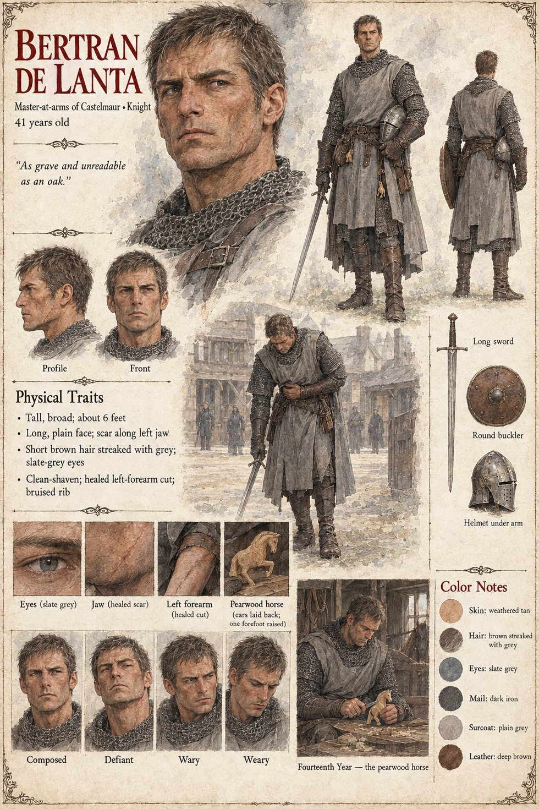

Bertran de Lanta
Sir Bertran de Lanta · master-at-arms of Castelmaur · knight · 41 years old by this sheet
The master-at-arms of Castelmaur, tall and broad, “as grave and unreadable as an oak”, knighted at nineteen and sworn to Auron in the temple at Montclar, who has spent twenty-two years learning that a knight does not say what he is thinking. On the twentieth of Garren, from the saddle, he drew on the stranger on the green at Vilarnau and had his long sword turned out of his hand in three point one seconds by a motion his eyes could not follow, and was left alive. On the sixth of Havren he lays two practice swords of ash on the gravel at the Narrow, takes up a buckler of boiled leather and fights him for most of an hour to a draw, a conversation, and a remarkably fluent one; he goes to bed with a cracked rib under a blanket his sister has embroidered with horses, and carves the beginning of a small pearwood horse with its ears laid back and one forefoot raised. On the night of the twenty-sixth he goes down into the gap in the second rank with a burning brand and holds it beside the foreigner through a night; toward the end, when the foreigner's left arm begins to tremble, he takes the brand from his fingers and puts his own sword into them, and they say each other's names, Ber-tran, Higa.
On the second of Iverin the Hierarch names him champion of the Threefold for the Edge, for a tithe whose price he was not told. He asks for the night, goes down the lane to the mill gate with the first of the pearwood horses in his fist, stands there as long as it takes a bell to ring Prime with the goose regarding him, and goes back up the lane, since nothing in his training told a man how to knock. On the third, in the temple yard, he fights the best he has ever fought, some three hundred strokes, takes a cut along the left forearm that opens the mail, has the stranger's blade hang a hand's breadth from his bare head for exactly as long as it takes a man to decide something, is disarmed by a left hand that answers before it is consulted, is spared a second time, and says to the foreigner, and not to the doors, “I yield. Let it be entered.” In the third winter, on the sixteenth of Kerren, he rides out of the gate of Castelmaur alone at night, without a banner and without his sword, to pay a debt of a kind this account does not record, with a grey gelding of pearwood, one hoof raised, in the pouch at his belt, which he carries for the rest of his life. The Lauze says he was never beaten. He would have said that he was spared twice in front of everyone and handed a sword once, and that the last was the only entry he ever found a way to carry. His sister has four children he has met twice. The same man has a page under Case 2231, whose sheet makes him thirty-eight; this one makes him forty-one, which is what twenty-two years of service from a knighting at nineteen come to. The two pages are not reconciled.
“I yield. Let it be entered.”
Appears In

Related Subjects


Related Records
![Night in a gorge between black cliffs under a few cold stars, terraced lines of trench crossing the slope with long low lines of glowing fire and grey smoke along the lip of each, a river of rust-red grasshoppers pouring down the lit slope into a timber-edged trench in the foreground, a crowd of diggers with spades and sacks bent along the bank, a row of boys in white shirts with raised drums and rattles on the upper terrace, and at the right a lean man in a pale robe with a drawn sword beside a knight in dark mail swinging a burning brand](../images/scenes/the-fire-in-the-ditch-grid.jpg)
On the twenty-sixth of Havren, with the line broken in the second rank at the Throat, Sir Bertran goes down into the gap with a burning brand and Tomobe no Higaide with a drawn tachi, and the two hold it for the whole of a night.